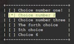

|  |
basicmenu.h
1.0.0
integrate a menu in your console program easily
|
#include <stdio.h> #include "basicmenu.h" int main(void) { // Start the basic menu startBasicMenu(); // Creat a new menu custom_Menu* mymenu; // Initialize a menu init_new_menu (&mymenu); // Add some items to the menu addNewItem (&mymenu , "Choice number one!"); addNewItem (&mymenu , "Choice number 2"); addNewItem (&mymenu , "Choice number three"); // display the menu set_menu_padding(6) ; put_menu_with (mymenu); set_menu_padding(0); return 0; }